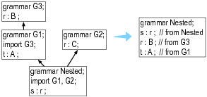

1. Grammar Structure
A grammar is essentially a grammar declaration followed by a list of rules, but has the general form:
/** Optional javadoc style comment */
grammar Name; ①
options {...}
import ... ;
tokens {...}
channels {...} // lexer only
@actionName {...}
rule1 // parser and lexer rules, possibly intermingled
...
ruleN
The file name containing grammar X must be called X.g4. You can specify options, imports, token specifications, and actions in any order. There can be at most one each of options, imports, and token specifications. All of those elements are optional except for the header ① and at least one rule. Rules take the basic form:
ruleName : alternative1 | ... | alternativeN ;
Parser rule names must start with a lowercase letter and lexer rules must start with a capital letter.
Grammars defined without a prefix on the grammar header are combined grammars that can contain both lexical and parser rules. To make a parser grammar that only allows parser rules, use the following header.
parser grammar Name;
...
And, naturally, a pure lexer grammar looks like this:
lexer grammar Name;
...
Only lexer grammars can contain mode specifications.
Only lexer grammars can contain custom channels specifications
channels {
WHITESPACE_CHANNEL,
COMMENTS_CHANNEL
}
Those channels can then be used like enums within lexer rules:
WS : [ \r\t\n]+ -> channel(WHITESPACE_CHANNEL) ;
Sections 15.5, Lexer Rules and Section 15.3, Parser Rules contain details on rule syntax. Section 15.8, Options describes grammar options and Section 15.4, Actions and Attributes has information on grammar-level actions.
1.1. Grammar Imports
Grammar imports let you break up a grammar into logical and reusable chunks, as we saw in Importing Grammars. ANTLR treats imported grammars very much like object-oriented programming languages treat superclasses. A grammar inherits all of the rules, tokens specifications, and named actions from the imported grammar. Rules in the “main grammar” override rules from imported grammars to implement inheritance.
Think of import as more like a smart include statement (which does not include rules that are already defined). The result of all imports is a single combined grammar; the ANTLR code generator sees a complete grammar and has no idea there were imported grammars.
To process a main grammar, the ANTLR tool loads all of the imported grammars into subordinate grammar objects. It then merges the rules, token types, and named actions from the imported grammars into the main grammar. In the diagram below, the grammar on the right illustrates the effect of grammar MyELang importing grammar ELang.

MyELang inherits rules stat, WS, and ID, but overrides rule expr and adds INT. Here’s a sample build and test run that shows MyELang can recognize integer expressions whereas the original ELang can’t. The third, erroneous input statement triggers an error message that also demonstrates the parser was looking for MyELang’s expr not ELang’s.
$ antlr4 MyELang.g4
$ javac MyELang*.java
$ grun MyELang stat
=> 34;
=> a;
=> ;
=> EOF
<= line 3:0 extraneous input ';' expecting {INT, ID}
If there are modes in the main grammar or any of the imported grammars then the import process will import those modes and merge their rules where they are not overridden. In the event any mode becomes empty as all its rules have been overridden by rules outside the mode this mode will be discarded.
If there were any tokens specifications, the main grammar would merge the token sets. If there were any channel specifications, the main grammar would merge the channel sets. Any named actions such as @members would be merged. In general, you should avoid named actions and actions within rules in imported grammars since that limits their reuse. ANTLR also ignores any options in imported grammars.
Imported grammars can also import other grammars. ANTLR pursues all imported grammars in a depth-first fashion. If two or more imported grammars define rule r, ANTLR chooses the first version of r it finds. In the following diagram, ANTLR examines grammars in the following order Nested, G1, G3, G2.

Nested includes the r rule from G3 because it sees that version before the r in G2.
Not every kind of grammar can import every other kind of grammar:
- Lexer grammars can import lexers, including lexers containing modes.
- Parsers can import parsers.
- Combined grammars can import parsers or lexers without modes.
ANTLR adds imported rules to the end of the rule list in a main lexer grammar. That means lexer rules in the main grammar get precedence over imported rules. For example, if a main grammar defines rule IF : ’if’ ; and an imported grammar defines rule ID : [a-z]+ ; (which also recognizes if), the imported ID won’t hide the main grammar’s IF token definition.
1.2. Tokens Section
The purpose of the tokens section is to define token types needed by a grammar for which there is no associated lexical rule. The basic syntax is:
tokens { Token1, ..., TokenN }
Most of the time, the tokens section is used to define token types needed by actions in the grammar as shown in Section 10.3, Recognizing Languages whose Keywords Aren’t Fixed:
// explicitly define keyword token types to avoid implicit definition warnings
tokens { BEGIN, END, IF, THEN, WHILE }
@lexer::members { // keywords map used in lexer to assign token types
Map<String,Integer> keywords = new HashMap<String,Integer>() {{
put("begin", KeywordsParser.BEGIN);
put("end", KeywordsParser.END);
...
}};
}
The tokens section really just defines a set of tokens to add to the overall set.
$ cat Tok.g4
grammar Tok;
tokens { A, B, C }
a : X ;
$ antlr4 Tok.g4
warning(125): Tok.g4:3:4: implicit definition of token X in parser
$ cat Tok.tokens
A=1
B=2
C=3
X=4
1.3. Actions at the Grammar Level
Currently there are only two defined named actions (for the Java target) used outside of grammar rules: header and members. The former injects code into the generated recognizer class file, before the recognizer class definition, and the latter injects code into the recognizer class definition, as fields and methods.
For combined grammars, ANTLR injects the actions into both the parser and the lexer. To restrict an action to the generated parser or lexer, use @parser::name or @lexer::name.
Here’s an example where the grammar specifies a package for the generated code:
grammar Count;
@header {
package foo;
}
@members {
int count = 0;
}
list
@after {System.out.println(count+" ints");}
: INT {count++;} (',' INT {count++;} )*
;
INT : [0-9]+ ;
WS : [ \r\t\n]+ -> skip ;
The grammar itself then should be in directory foo so that ANTLR generates code in that same foo directory (at least when not using the -o ANTLR tool option):
$ cd foo
$ antlr4 Count.g4 # generates code in the current directory (foo)
$ ls
Count.g4 CountLexer.java CountParser.java
Count.tokens CountLexer.tokens
CountBaseListener.java CountListener.java
$ javac *.java
$ cd ..
$ grun foo.Count list
=> 9, 10, 11
=> EOF
<= 3 ints
The Java compiler expects classes in package foo to be in directory foo.